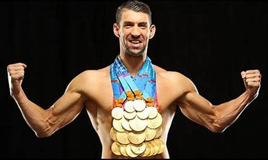
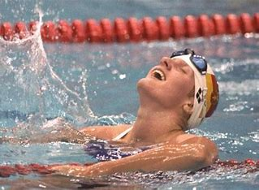
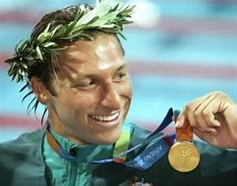
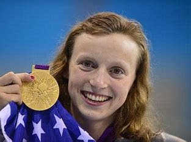

As the article provides, Leonidas of Rhodes was a well-known ancient Greek swimmer. He was a well-known swimmer who competed in the Olympics and earned outstanding results. Leonidas of Rhodes raced in the stadium, a sprint event lasting about 200 meters.
From 164 BCE to 152 BCE, he won the stadium race in four consecutive Olympic Games, becoming the first recorded swimmer to do so. Due to the revolution that happened all the way till nowadays, the technique and times are incredibly improving in a way that makes it hard to mention all the winners that have been succeeded on the road.
From 164 BCE to 152 BCE, he won the stadium race in four consecutive Olympic Games, becoming the first recorded swimmer to do so. Due to the revolution that happened all the way till nowadays, the technique and times are incredibly improving in a way that makes it hard to mention all the winners that have been succeeded on the road.
-Though, here it is the most unforgettable swimmers with repetitive records and wins:
- Michael Phelps, an American swimmer, is widely recognized as the best swimmer in history. He holds the record for the most Olympic gold medals won by a person, with 23 golds and 28 in total. Phelps dominated a variety of events, focusing on butterfly and individual medley races.
- Katie Ledecky, also from the United States, is one of history's most dominant female swimmers. She has set countless world records and won several Olympic gold medals. Ledecky excels at freestyle events, especially long-distance races like the 800m and 1500m.
- Mark Spitz, an American swimmer, was a pioneer in the 1970s. At the 1972 Olympics, he won a remarkable seven gold medals, breaking the previous record that stood for 36 years. Spitz has shown his versatility by competing across numerous strokes and distances .
- Ian Thorpe, sometimes known as the "Thorpedo," was an Australian swimmer who dominated the sport in the early 2000s. He won numerous Olympic gold medals and set several world records. Thorpe specialized in freestyle events and was renowned for his powerful technique and graceful swimming style.
- Dawn Fraser is an Australian swimmer who won three Olympic gold medals in the 100-meter freestyle. She was the first woman to swim the 100 meters in under a minute and held several world records throughout her career. Fraser was recognized for her toughness and competitive nature.
- Before his renowned role as Tarzan in Hollywood, Johnny Weissmuller was an excellent swimmer. In the 1920s, he won five gold medals at the Olympics and set several world records. Weissmuller's triumph boosted the popularity of swimming as a competitive sport.
- Alexander Popov, a Russian swimmer, dominated sprint freestyle competitions in the 1990s. He won several Olympic gold medals and set world records in the 50 and 100-meter freestyle. Popov's silky technique and forceful strokes distinguished him.
- Kristin Otto of Germany created history at the 1988 Olympics by becoming the first woman to win six gold medals in a single event. She excelled in a variety of strokes and distances, securing her place among the greatest female swimmers of all time.
- Ryan Lochte is an American swimmer who has won multiple Olympic gold medals and set countless world records. He is well-known for his versatility in many strokes and individual medley events. Lochte's athleticism and competitive drive have made him a well-known personality in swimming.
- Matt Biondi, an American swimmer, was extremely successful in the 1980s and 1990s. He won numerous Olympic gold medals and established world records in the freestyle and butterfly events. Biondi's outstanding sprinting speed and strong strokes made him a formidable contender.



